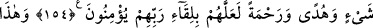
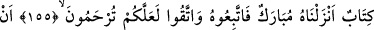
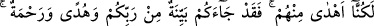

SEMÂVÎ KİTAPLAR VE KUR’ÂN
154. Sonra iyilik edenlere nimetimizi tamamlamak, her şeyi açıklamak, hidayete
erdirmek ve rahmet etmek maksadıyla Musa’ya da Kitab’ı (Tevrat’ı) verdik.
Umulurki, Rablerinin huzuruna varacaklarına îman ederler.
155. İşte bu (Kur’an), bizim indirdiğimiz mübarek bir kitaptır. Buna uyun ve
Allah’tan korkun ki size merhamet edilsin.
156. “Kitap, yalnız bizden önceki iki topluluğa (hıristiyanlara ve yahudilere)
indirildi, biz ise onların okumasından gerçekten habersizdik” demeyesiniz diye;
157. Yahut “Bize de kitap indirilseydi, biz onlardan daha çok doğru yolda
olurduk” demeyesiniz diye (Kur’an’ı indirdik). İşte size de Rabbinizden açık bir
delil, hidayet ve rahmet geldi. Kim, Allah’ın âyetlerini yalanlayıp onlardan yüz
çevirenden daha zalimdir! Âyetlerimizden yüz çevirenleri, yüz çevirmelerinden
ötürü azabın en kötüsüyle cezalandıracağız.
Bu âyet önceki âyetin devamı mâhiyetindedir. Takdiri şöyledir: “Allah’ın yoluna uyma
konusundaki bu tavsiyeyi yaptık, sonra Musâ’ya kitabı verdik.”
“Sonra iyilik edenlere” peygamberlerden ve mü’minlerden kim olursa olsun Kitâb’ı
en iyi yerine getirenlere ikram ve nimetimizi “tamamlamak” “her şeyi” din konusunda
ihtiyaç duyulan bütün meseleleri mufassal olarak “açıklamak,” maksadıyla kitap
indirdik.
“Sümme” “Sonra” kelimesi, bir şeyi anlatırken bir fâsıla vermek anlamınadır. Tıpkı
şu söze benzer: “Bu gün senin ne yaptığın bana ulaştı. Sonra dünkü yaptıkların daha
garip.”
Âyetteki ifadeler, onların şeriatında ictihad olmadığını göstermez. Nitekim Yusuf